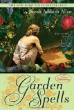

Great Reads
I read many books in various formats; audiobook, ebook, paperback, or hardback - it's all good to me!
*I don't believe in deterring people from books, so I will only promote the best of what I read, and leave out the rest*
Classic 1
classic 2
Dale Carnegie
| Cover | Title | Pages | Rating | Review | Links |
|---|---|---|---|---|---|
| How to Win Friends & Influence People | 288 | 3/5 | Through examples of many famous and successful people throughout history, this book teaches us how to work with others and be nice. I sincerely believe that my ability to effectively communicate and work with other people improved exponentially through reading this book and putting what I learned into action. | GoodReads BookMooch Amazon Barnes&Noble |
Napoleon Hill
| Cover | Title | Pages | Rating | Review | Links |
|---|---|---|---|---|---|
 |
Outwitting the Devil: The Secret to Freedom and Success | 288 | 5/5 | Outwitting the Devil, states powerfully that "drifters of thought and thinking patterns cry that the world has run dry of opportunities, but non-drifters do not wait for opportunity - they create these." Within the pages of the book, an interview between the author and the Devil is taking place. The Devil's great concern is that real thinkers may appear on earth... and they would share with others the "greatest of all truths - that the time spent fearing something would, if reversed, give mankind all he wants in the material world and save him after death." The problem exists as more than choice of thoughts. One must be repetitive to the point of establishing an ongoing rhythm that flows without effort. This rhythm is the "last stage of habit." Drifting and procrastination are the same practical knowledge. Hypnotic rhythm makes dominating thoughts AND thinking patterns permanent. | GoodReads BookMooch Amazon Barnes&Noble |
Sarah Allison Allen
| Cover | Title | Pages | Rating | Description | Links |
|---|---|---|---|---|---|
|  | Garden Spells | 304 | 4/5 | Claire has lived in Bascom, North Carolina for most of her life. She lives alone in the house her grandmother left her and runs a very special catering business. A very special catering business using ingredients from a very special garden that has been kept by the Waverley women for generations. She likes things the way they are, then her missing sister returns to Bascom with a daughter and both move in with Claire. Sydney takes stock of all she left behind, Claire must heal the wounds of the past, and both sisters must struggle with their family legacy to have any hope of happiness in the future. | GoodReads BookMooch Amazon Barnes&Noble |
 |
The Peach Keeper | 273 | 5/5 | 4 main characters went to high school together-- Sebastian was The Freak(eye-liner wearing, of unknown sexual orientation), Paxton the Princess and her twin brother Colin the Stick-man and finally, Willa, revealed at the end of senior year as the Joker--perpetrator of awesome pranks. | GoodReads BookMooch Amazon Barnes&Noble |
 |
The Girl Who Chased The Moon | 269 | 3.5/5 | Seventeen year old Emily Benedict arrives in Mullaby, North Carolina, a town filled with misfits, after the death of her mother Dulcie. When she comes to town to live with her grandfather, she soon realizes her mother's past is filled with scandal and regret, and Emily struggles to understand the mom she thought she knew and the town that hasn't let go of the past. Parallel to this, thirty-four year old Julia Winterson is counting the days she can leave Mullaby as she is forced to settle some unresolved debt after the passing of her father a couple years prior. As she works to get back to the life she left, she finds there's a part of her past that is waiting to resurface and hopefully offer a different outcome than the last time she was in Mullaby. | GoodReads BookMooch Amazon Barnes&Noble |
 |
The Sugar Queen | 276 | 4/5 | Josey Cirrini takes care of her elderly demanding mother. She hides sweets in her closet and has a crush on the mailman. She believes her life is settled until she comes home and discovers a local waitress hiding in her closet. Her efforts to force Della Lee to leave cause Josey's world to expand. She meets the owner of a local cafe, Chloe Finley, who has troubles with books and has just broken up with her boyfriend, who happens to be friends with Adam, her mailman. A magical tale of loneliness, duty, love, and family secrets. | GoodReads BookMooch Amazon Barnes&Noble |
Rainbow Rowell
| Cover | Title | Pages | Rating | Description | Links |
|---|---|---|---|---|---|
 |
Attachments | 336 | 5/5 | Wonderful romantic comedy about an internet security guy who reads the emails of a girl (as part of his job) and falls in love with her. Meanwhile, she sees him around and falls for him too. | GoodReads BookMooch Amazon Barnes&Noble |
 |
Elanor & Park | 336 | 5/5 | Eleanor & Park is a story that tells of the romance between two misfits, Eleanor and Park. Eleanor being a misfit and always standing out because of her weight, bright red curly hair, awkwardness, and funky outfits. Park being a misfit because of the fact that he is the only Asian kid in the entire school. An amazing romance that started as a reluctant sitting arrangement, to quick exchanges every now and then, to becoming a couple. Every small interaction, every little word exchanged, every time they listened to music or read comics together, only made Eleanor & Park shine brighter. | GoodReads BookMooch Amazon Barnes&Noble |
Sci-Fi 1
Sci-Fi 2
Truman Capote
| Cover | Title | Rating | Description |
|---|---|---|---|
 |
A Christmas Memory | 4/5 | This is the story of Capote's beloved cousin Sook, and the years that he (Buddy in the story) spent living with her as a young boy. She's a little daft, but has a heart of gold, and is one of those rare breeds who is a giver instead of a taker. They don't have much money for the holidays, but Buddy and Sook make a game out of counting their pennies to buy the ingredients for Sook's famous whiskey-soaked fruitcake. Their visit to the grumpy Indian to buy the liquor is a hoot. Sook is simple but philosophical in her own strange way. When a well-off lady is miffed that Sook won't sell her the choice Christmas tree that she and Buddy tramped through the woods to fetch, because after all, the woods are full of trees, Sook answers her with "I doubt it. There are never two of anything." |
 |
Breakfast at Tiffany's | 3.5/5 | A beautiful young girl, with a mysterious past, an elegant present, and a seemingly empty future. Holly just wanted to find a place where she was constantly happy, and at peace with herself, like she is within Tiffany's. Holly stumbles through life in a 1950's New York setting with her unnamed companion which is a tiger striped feline. She lives in a scarce and unmanaged apartment, directly underneath her friend, nicknamed "Fred" (who seems may be one of the only 3 people who truly care for Holly.) |
 |
House of Flowers | 4/5 | Ottilie falls in love with Royal Bonaparte who resides on top of a mountain. She joins him in his house that he shares with his grandmother, the wicked Old Bonaparte. No-read no-write Ottilie tries to injure the grandmother until one day that she losses her temper. |
 |
The Diamond Guitar | 4.5/5 | The story is set in a prison in a rural area near Mobile, Alabama where convicts perform road work and farm turpentine from nearby pine forests. The two main characters are both convicts, Mr. Schaeffer, an older man serving a ninety-nine year sentence for murder, and Tico Feo, a newly arrived young man sentenced to serve two years for stabbing two men. Mr. Schaeffer and Tico form a fast bond that is simultaneously intimate and platonic. On Valentine's Day they agree to attempt an escape during the following day's work. Tico succeeds in getting away, but Mr. Schaeffer breaks his ankle in a shallow creek. Tico betrays Mr. Schaeffer's affections by not coming to his aid, but Mr. Schaeffer is given credit for trying to capture Tico and takes possession of the prized guitar. |
Historical Fiction 2
Best Reads Of 2011
In order read:| Cover | Title | Author | Pages | Rating | Description | Links |
|---|---|---|---|---|---|---|
| The Heretic's Daughter | Kathleen Kent | 332 | 5/5 | I thoroughly enjoyed this (mostly true) story about a girl who's mother, and later most of her family, was accused of witchcraft in Salem, Mass. | GoodReads BookMooch Amazon Barnes&Noble | |
| Herland | Charlotte Perkins Gilman | 176 | 5/5 | Loved this book about 3 men of different ideologies who discover a rumoured colony of all women who have children without men. Great hypothetical of an all female society without competition for mates | GoodReads BookMooch Amazon Barnes&Noble | |
 |
Moloka'i | Alan Brennert | 384 | 5/5 | Great fictional book based in reality, story of a girl diagnosed with leprosy, later called Hansen's Disease. At the age of 6 she was sent to live in a leper colony away from her family | GoodReads BookMooch Amazon Barnes&Noble |
 |
Water for Elephants | Sara Gruen | 335 | 5/5 | Great love story about a vet who out of desperation joins a circus and falls in love with the circus, the animals, and the head animal trainer's wife. | GoodReads BookMooch Amazon Barnes&Noble |
 |
The Fountainhead | Ayn Rand | 704 | 5/5 | Highly enjoyable story about Howard Roark who is an architect and refuses to build except to his own design without compromise | GoodReads BookMooch Amazon Barnes&Noble |
| The Shack | William P Young | 252 | 4.5/5 | This is the story of Mack, a man whose 6-year-old daughter was abducted and brutally murdered during a family camping trip. The serial killer, a man who leaves a ladybug pin every time he kills a child, was never captured, and the only clue to Missy's abduction was an undeniable, bloodstained red sun-dress on the floor of an abandoned shack high up in the middle of nowhere. Now, four years after Missy's murder, her father receives a letter in his mailbox -- from God -- inviting him back to the scene of the crime, a return to The Shack where the trail of evidence ended. - If more people believed in God as described in this book, the world would be a much better place! | GoodReads BookMooch Amazon Barnes&Noble | |
 |
Fahrenheit 451 | Ray Bradbury | 227 | 4.5/5 | Guy Montag is a book-burning fireman. After years of burning books and living with an overly-medicated wife in a society that focuses on distraction, entertainment, and "happiness", he doesn't write a mission statement...he decides to start reading banned books on his search for something *real*. Bradbury claims that it's not about censorship here. Rather, it's about a society that asks "how" over "why"...that would rather watch mindless, chattering TV characters broadcast over three walls of their living room than read from Shakespeare, Whitman, or The Old Testament. The people in his world use radio broadcasting earplugs to keep them tuned into trivial noise rather than have to think about the big issues at hand...war, the value of a life, quality relationships, art, nature. A cautionary tale. | GoodReads BookMooch Amazon Barnes&Noble |
| The Hunger Games | Suzanne Collins | 374 | 5/5 | In the ruins of a place once known as North America lies the nation of Panem, a shining Capitol surrounded by twelve outlying districts. The Capitol is harsh and cruel and keeps the districts in line by forcing them all to send one boy and one girl between the ages of twelve and eighteen to participate in the annual Hunger Games, a fight to the death on live TV. | GoodReads BookMooch Amazon Barnes&Noble | |
 |
Animal Farm | George Orwell | 112 | 5/5 | After a speech by wise Old Major, the great pig (read Marx/Lenin), in which it is noted that the life of an animal is misery and slavery and man is the only creature that consumes without producing, the animals rise up and throw off the yolk of their oppressive master Jones (read Romanov family). Two pigs Napoleon (Stalin) and Snowball (Trotsky) lead the Revolution, supported by the animals of the farm and the hard work of the horse, Boxer. The only one that seems unconvinced is Benjamin the donkey who notes that donkeys live a long time and that life will go on as it always had gone on - badly. Moses the Raven (the Church), who always speaks of Sugarcandy Mountain, somewhere up in the clouds, a magical place, also leaves for awhile. The animals fight back an attack of Jones (Russian Civil War) to retake the farm and all seems to be going nicely. Things go well, or so the pig intelligentsia says, until a schism between Napoleon and Snowball regarding the building of a windmill. Everything falls apart. Napoleon eliminates all traitors and whenever anything goes wrong, it is Snowball that did it. Pigs become oppressors using dogs (KGB, etc.) to keep order. Sheep constantly note - two legs bad, four legs good; until pigs walk on two legs when it is four legs good, two legs better. Truth and imagined truth are blended. All animals are equal, but some animals are more equal than others. It goes without saying that this book highlights the notion that totalitarian propaganda can control opinion, a notion very true today | GoodReads BookMooch Amazon Barnes&Noble |
| Room | Emma Donoghue | 321 | 5/5 | Room is home to Jack, but to Ma, it is the prison where Old Nick has held her captive for seven years. Through determination, ingenuity, and fierce motherly love, Ma has created a life for Jack. But she knows it's not enough...not for her or for him. She devises a bold escape plan, one that relies on her young son's bravery and a lot of luck. What she does not realize is just how unprepared she is for the plan to actually work. | GoodReads BookMooch Amazon Barnes&Noble | |
| The Immortal Life of Henrietta Lacks | Rebecca Sloot | 370 | 5/5 | In 1951, Henrietta was diagnosed with cervical cancer by doctors at Johns Hopkins. During her biopsy, cell samples were taken and given to a researcher who had been working on the problem of trying to grow human cells. Henrietta's cancer spread wildly, and she was dead within a year. But her cells turned out to be an incredible discovery because they continued growing at a very fast rate. The doctor at Johns Hopkins started sharing his find for no compensation, and this coincided with a large need for cell samples due to testing of the polio vaccine. The HeLa cells would be crucial for confirming that the vaccine worked and soon companies were created to grow and ship them to researchers around the world. Since then, Henrietta's cells have been sent into outer space and subjected to nuclear tests and cited in over 60,000 medical research papers | GoodReads BookMooch Amazon Barnes&Noble | |
 |
Ender's Game | Orson Scott Card | 324 | 4/5 | The story of a young boy who is drafted into an all-consuming military training program at the age of 6. The program he's inducted into seeks to forge a new generation of military commanders out of gifted children, and it's sole purpose is to break them at any cost, until they finally discover someone who can't be broken. What follows is an emotionally complex and at times painfully familiar story of children struggling to accept their inner demons. Ender in particular is cursed with a brutal combination of profound empathy for others, and an overwhelming survival instinct that drives him to win no matter what the cost. It is this combination of gifts that may make him the commander the fleet needs in it's war against the alien invaders, but only if Ender can find a way to survive the burden of understanding his enemy so thoroughly that he can no longer see them as "the other," but as a reflection of himself. | GoodReads BookMooch Amazon Barnes&Noble |
 |
The Help | Katheryn Stockett | 451 | 4.5/5 | The story of Skeeter, a white girl who was raised by a black maid, and two black maids. Skeeter writes the stories of the relationships between the black maids and their white employers in Jackson Mississippi in the 1960s | GoodReads BookMooch Amazon Barnes&Noble |
 |
Cat's Cradle | Kurt Vonnegut | 304 | 4/5 | A journalist writing a book about a famous scientist discovers the scientist has invented a substance that could destroy the world. "Ice-nine" turns liquids into solids instantly. John finds himself on an island with the dead scientist's three children, one of whom is a midget, as the world comes to an end. Complete with original theology from a calypso singer; a banana republic dictator; and a blackly fatalistic, yet hysterically funny take on the future, this book is Vonnegut at his very best. | GoodReads BookMooch Amazon Barnes&Noble |
 |
Miss Peregrine's Home for Peculiar Children | Ransom Riggs | 348 | 4.5/5 | After the shocking murder of his grandfather, Jacob's life is turned upside down. He sees something unbelievable, something that lends credence to his grandfather's stories, and his parents and the police question his mental stability. In an attempt to help Jacob reconcile what is real from the fantastic, his father takes him to Cairnholm Island off the coast of Wales. Once on the island, Jacob feels the impact of being in a place seemingly out of time and separate from the world. The island seems to hide secrets of its own, its fog providing a curtain between the present and past. But hoping the reality of his grandfather's childhood will allow Jacob to heal, his father permits Jacob to explore the island and the old Home. But what Jacob finds forces him to believe in the magical and fantastic once again. Soon events take a darker turn, as Jacob learns he is being hunted by evil beings for shocking reasons. | GoodReads BookMooch Amazon Barnes&Noble |
 |
Speaker for the Dead | Orson Scott Card | 382 | 4/5 | In three thousand years, his books The Hive Queen and The Hegemon have become holy writ, and the name of Ender anathema; he is the Xenocide, the one who killed an entire race of thinking, feeling beings, the only other sapient race humankind had found in all the galaxy. The only ones, that is, until the planet called Lusitania was discovered and colonized. On Lusitania humans found another race of ramen ... a young race, beings just beginning to lift their eyes to the stars and wonder what might be out there. The discovery was seen as a gift to humanity, a chance to redeem the destruction of the Buggers. The "Piggies," were placed off-limits to the colony. The only humans allowed to meet them and speak with them are trained xenobiologists, and then only two at a time. This time, there will be no tragic misunderstandings leading to war. This time, men die-bizarrely killed by the Piggies. Andrew Wiggin is called to Lusitania to Speak the deaths of the two xenobiologists, and walks into a maelstrom of fear and hatred. To Speak for these dead, he must first unravel the web of secrets surrounding the lives of the Piggies and those who study them. He must Speak not only for the dead, but for a living alien race | GoodReads BookMooch Amazon Barnes&Noble |
 |
Gone With the Wind | Margeret Mitchell | 1037 | 5/5 | It takes guts to make your main character spoiled, selfish, and stupid, someone without any redeeming qualities, and write an epic novel about her. But it works for two reasons. First of all you wait for justice to fall its merciless blow with one of the most recognized lines in fiction ("frankly my dear, I don't give a damn"), but you end with a broken and somewhat repentant character and you can't be pitiless. Secondly, if you were going to parallel the beautiful, affluent, lazy, spirited South being conquered by the intellectual, industrious North, what better way to do that than with characters who embody those characteristics? You come to feel a level of sadness that the South and Scarlett lost their war and hope that they will rebuild. | GoodReads BookMooch Amazon Barnes&Noble |
 |
Madam Secretary | Madaline Albright | 592 | 4/5 | This was a very interesting autobiography of the first woman Secretary of State. Madeleine Albright was born in Czechoslovakia. During World War II her family fled to London. Then when communism took over their country, her family came to the United States. It really shouldn't have been a surprise that Albright got involved with foreign policy since her father was an ambassador before the war. Albright did a lot as Secretary of State. She had to deal with Israel and the PLO, North Korea, Saddam Hussein, Kosovo, etc. It's hard to believe that she held that post for only four years. I enjoyed reading about what happened behind the closed doors and about the human side of all the political characters around the globe. | GoodReads BookMooch Amazon Barnes&Noble |
| Xenocide | Orson Scott Card | 592 | 3.5/5 | At the beginning of Xenocide we are introduced to another planet, a colony called Path. Path is a world developed from Chinese culture. Some citizens of path, when they are children, show the traits of being Godspoken; the need to clean their hands until they bleed, other strange compulsions, and extremely high intelligence. If they do in fact prove to be Godspoken they are educated and become part of the elite that rules the people of this planet. The Godspoken are supposed to hear the voices of the Gods, and whenever they do or think something unworthy, they must cleanse themselves. At first the reader is led to believe that sixteen year old godspoken woman Qing Jao is going to play a major part in the story, but really it turns out to be her personal servant, Si Wang-mu. I don’t want to give anything away, but let’s just say that these traits that show a person to be godspoken are more than they seem, and the entire belief system of Path is about to be turned upside down. Until the two worlds begin communicating, Xenocide jumps back and forth between the storyline on path and the story that continues from Speaker for the Dead. The fleet from the previous book, armed with a device capable of destroying entire planets, is still en route and Ender, Ela, Grego, Miro and all the other characters from Speaker for the Dead are desperately working to solve all the different problems that threaten them and the other two intelligent species now living on Lusitania. | GoodReads BookMooch Amazon Barnes&Noble | |
 |
Straight Man | Richard Russo | 416 | 3.5/5 | William Henry Devereaux, Jr., the reluctant chairman of the English department of a badly underfunded college in the Pennsylvania rust belt. Devereaux's reluctance is partly rooted in his character--he is a born anarchist-- and partly in the fact that his department is more savagely divided than the Balkans. In the course of a single week, Devereaux will have his nose mangled by an angry colleague, imagine his wife is having an affair with his dean, wonder if a curvaceous adjunct is trying to seduce him with peach pits, and threaten to execute a goose on local television. All this while coming to terms with his philandering father, the dereliction of his youthful promise, and the ominous failure of certain vital body functions. | GoodReads BookMooch Amazon Barnes&Noble |
 |
Children of the Mind | Orson Scott Card | 370 | 5/5 | Jane, the evolved computer intelligence, is using her newly discovered abilities to take the races of buggers, humans and pequeninos outside the universe and back in instantaneously. She uses these powers to move them to distant habitable planets for colonization. She is losing her memories and concentration as the vast computer network connected to the ansible is being shut down. If she is to survive, she must find a way to transfer her aiúa (or soul) to a human body. | GoodReads BookMooch Amazon Barnes&Noble |
 |
Uncle Tom's Cabin | Harriet Beecher Stowe | 438 | 5/5 | Inspiring story of a slave who is sold from a decent owner, who gets into debt, to a slave trader. While on route to market to be sold a little girl with the biggest heart in the world requests that her very rich father, buy Tom. Then the little girl dies, basically of a broken heart because she can't stand slavery and she sees it as deplorable. Her father is killed shortly after (maybe shortly before, I don't specifically remember) and his wife, who is completely without compassion, sends all of the slaves, including Tom, to auction. She then goes and lives with relatives. Tom is next bought by a terrible owner who wants Tom to be a foreman on his plantation, but Tom is very Christian and refuses to harm a slave who attempted to run away. Tom stays true to his beliefs and never hurts another living soul, and the new owner beats him to death because of it, trying to break him. | GoodReads BookMooch Amazon Barnes&Noble |
 |
Eleanor Roosevelt: First Lady of American Liberalism | Lois Scharf | 248 | 5/5 | I loved learning about Eleanor in this biography. She was a very interesting woman, with a very unhappy childhood and marriage. She was in love with Franklin but after he cheated on her, they never had the same relationship again. She was very instrumental in a number of programs, and I found her giving nature very inspirational. | GoodReads BookMooch Amazon Barnes&Noble |
 |
The Pillars of the Earth | Ken Follett | 973 | 3.5/5 | Tom Builder, having lost a commission to build a home for Percy Hamleigh’s son, roams southern England, seeking work. After losing his wife in childbirth and encountering the dark and empowered Ellen living in a forest cave with her son, Jack, Tom settles in Kingsbridge under the auspices of Prior Philip, who aspires to expand his priory by rebuilding a cathedral. | GoodReads BookMooch Amazon Barnes&Noble |
 |
Anne of Green Gables | Lucy Maud Montgomery | 320 | 4/5 | The story of a young orphaned girl named, you guessed it, Anne. Born in Nova Scotia only to lose both of her parents from the fever at the age of three months, Anne has grown up in many households, never being able to stay in one place for long. As you can imagine, this has left young Anne feeling needy and unwanted. And when siblings Marilla and Matthew decide to adopt a boy to help work on their farm, they never expect to get a girl instead. Naturally, their first instinct is to give her to someone else; but soon after, under the influence of Anne's pleading, they decide that with them is where she shall stay. | GoodReads BookMooch Amazon Barnes&Noble |
 |
Their Eyes Were Watching God | Zora Neale Hurston | 256 | 4/5 | Janie, a fair-skinned black woman caught in the time period between the end of slavery and the civil rights movement, is the first woman in her family who has the opportunity to be defined as something other than property. Janie is unable to define herself or seek out the independence for which she longs; however, this is not due to the racism or prejudices of white society (in fact, there isn't a prominent white character in the book). Instead, Hurston takes a fascinating look at intra-racial racism. Janie's obvious "whiteness" sets her apart from the black community. At first, she's envied for her pretty hand-me-down dresses and hair ribbons that she obtains from the kind white family for which her grandmother works. Coupled with her straight hair (which hangs down to her waist), her exquisite beauty, and her light skin, she defies color categorization and leaves the question of "What is black?" lacking a definite answer. Later, she's an outcast because her second husband's "big voice" and quest for power in the all black community of Eatonville comes to be identified with the white masters of days gone by, and Janie comes to be seen in the role of the Southern plantation "mistress." Janie's grandmother tells her that the black woman is the "mule of the world," the lowest of the low. Janie finds this to be true in her first two marriages, as she is treated like property by Logan Killicks and is later objectified by Jody Starks. It isn't until she meets Tea Cake, a man half her age, that Janie begins to live life on her own terms and not by the definition her man has set forth for her. | GoodReads BookMooch Amazon Barnes&Noble |
 |
The Forever War | Joe Haldeman | 278 | 3.5/5 | William Mandella, a student who is drafted into an elite military task force without his consent and shipped off to war against the Taurans. After a gruelling training period, Mandella is involved in a resounding victory against an enemy base. However, due to time dilation, decades have passed when they finally return home to Earth (even though they’ve only been out less than a year in their time). Besides the culture shock of returning to a completely different world, the Military is also dealing with the fact that the Taurans have had that much more time to develop more sophisticated weaponry and technology, leaving them at a distinct advantage. After surviving four more years of battle, Mandella officially becomes the oldest soldier in the war (with hundreds of years of objective service). By the time he and his companion Marygay return to Earth a final time, society has become nearly unrecognisable. With nothing left to tie him to Earth, he and Marygay decide instead to re-enlist. | GoodReads BookMooch Amazon Barnes&Noble |
 |
Broken For You | Stephanie Kallos | 400 | 4/5 | Margaret Hughes, she is living alone in a mansion in Seattle with only a massive collection of valuable antiques for company. Enter Wanda Schultz, a young woman with a broken heart who has come west to search for her wayward boyfriend. Both women are guarding dark secrets and have spent many years building up protective armor against the outside world. But as the two begin their tentative dance of friendship, the armor begins to fall away and Margaret opens her house to the younger woman. This launches a series of remarkable and unanticipated events, leading Margaret to discover a way to redeem her cursed past, and Wanda to learn the true purpose of her cross-country journey. Along the way, a famous mosaic artist is born, an old woman is reunited with her long-lost tea set, and a sad-eyed drifter finds his long-lost daughter." Broken for You is a testament to the saving graces of surrogate families, and shows how far the tiniest repair jobs can go in righting the world's wrongs. | GoodReads BookMooch Amazon Barnes&Noble |
 |
Not Telling | Cindy Vine | 236 | 3.5/5 | Two sisters living in Southern Africa with their Dad. Bitterness, rage, anger and hatred divide the two sisters after their Mother dies tragically. Jenny lives through three trauma's and her sisters constant verbal abuse, until one day she is able to talk about it. | GoodReads BookMooch Amazon Barnes&Noble |
Best Reads Of 2012
In order read:
| Cover | Title | Author | Pages | Rating | Description | Links |
|---|---|---|---|---|---|---|
| Snow Flower and the Secret Fan | Lisa See | 269 | 5/5 | Great story about the lives of a young girl and her "old same" as women in China during the time, and in the region, of foot binding. | GoodReads BookMooch Amazon Barnes&Noble | |
 |
The Romanov Bride | Robert Alexander | 306 | 5/5 | Great book split between two points of view. First from the true to life Ella who married Grand Duke Sergei of Moscow. Sergei was uncle to Tsar Nicholas, and Ella was sister to Nicholas's wife Alexandria (Alicky). The second point of view was from the fictional character Pavlov who represented the masses of Russia. After his pregnant wife was killed in the Massacre of 1905, which was a peaceful demonstration, he joined the revolution. The greatest part of this book for me was Ella, she was a very strong woman and very inspirational. | GoodReads BookMooch Amazon Barnes&Noble |
 |
Island Beneath the Sea | Isabel Allende | 457 | 5/5 | One of my favorite books so far! This book tells the story of a slave from Haiti, and tells much about the Haitian Revolution against the French who "owned" the colony. The story later follows the main character to Louisiana where she faces another set of problems. | GoodReads BookMooch Amazon Barnes&Noble |
 |
Ender's Shadow | Orson Scott Card | 469 | 4/5 | Story of Bean's beginning in Rotterdam, how he is an altered clone, and why he is so small. | GoodReads BookMooch Amazon Barnes&Noble |
 |
Dancing Under the Red Star | Karl Tobian | 384 | 4/5 | Amazing story of an American woman who moved with her family to the Soviet Union in 1932. She grew up there, was arrested in 1945, and spent 10 years in hard labor camps in Siberia. Contains many details about the gulag as well as Margaret's own story of survival and faith. | GoodReads BookMooch Amazon Barnes&Noble |
 |
I know why the caged bird sings | Maya Angelou | 291 | 3.5/5 | Maya Angelou describes her life from a young girl up to the birth of her first child at age 16. | GoodReads BookMooch Amazon Barnes&Noble |
 |
Nothing to Envy: Ordinary Lives in North Korea | Barbara Demick | 314 | 4/5 | Fascinating look into ordinary lives in North Korea. The book follows the lives of six defectors. What interested me most was the subject's moment of clarity-what prompted them to leave-because they were so thoroughly indoctrinated to believe that they have the best lives in the world. Even during the great famine. What interested me most was the subject's moment of clarity-what prompted them to leave-because they were so thoroughly indoctrinated to believe that they have the best lives in the world. Even during the great famine. I don't know if or when democracy will come to North Korea but I'm not so sure it will make their lives any easier. The North Koreans who settle in South Korea often have a hard time assimilating and even want to go back. | GoodReads BookMooch Amazon Barnes&Noble |
 |
The Front Porch Prophet | Raymond Atkins | 308 | 5/5 | The story is about A.J. and his best friend Eugene and various family members and others in a small Georgia town. Mostly the wild escapades of the two. Eugene lives up on a mountain in a cabin, A.J. is married and lives in town. Some rather wild things happen, such as a house being moved by helicopter and the porch falls off and lands on a dog of one the characters. Rather unrealistic, but the writer adds a lot of humour from the situation. Not that having a dog die is funny, far from it, but the way the situation is handled is funny. Eugene has lived a rather wild & crazy life and A.J. is a stable guy with a wife, kids and a job, yet the two have been friends since they were young boys. Eugene gets cancer and A.J. manages his care giving. Eugene requests that when the time comes & the pain gets to be too much that A.J. will shoot him so he doesn't have to suffer. A.J. tells him that there's no way he will do it. But then toward the end he sees him in extreme pain and nothing left off him, but skin & bones, just a shadow of what he once was | GoodReads BookMooch Amazon Barnes&Noble |
 |
The Count of Monte Cristo | Alexandre Dumas | 1276 | 4/5 | Falsely accused of treason, the young sailor Edmond Dantes is arrested on his wedding day and imprisoned in the island fortress of the Château d'If. Having endured years of incarceration, he stages a daring and dramatic escape and sets out to discover the fabulous treasure of Monte Cristo, and to catch up with his enemies. | GoodReads BookMooch Amazon Barnes&Noble |
 |
A Tree Grows in Brooklyn | Betty Smith | 496 | 4.5/5 | Francie Nolan is a smart little girl who's trying to find beauty in her sometimes ugly, always poverty-stricken life. Her adored father is wonderful, but too plagued by his own demons to support his family. Her mother loves her children fiercely but is often harsh because she thinks it's her job to keep them grounded in reality (oh, and she seems to love Francie's brother more). Her aunt is a bit of a floozy, but is still kind and generous. Together, this family lives dirt-poor in Brooklyn. And that's it. But from this simple premise grows a tender, heartbreaking story | GoodReads BookMooch Amazon Barnes&Noble |
 |
The Guernsey Literary and Potato Peel Pie Society | Mary Ann Shaffer | 274 | 5/5 | January 1946: London is emerging from the shadow of the Second World War, and writer Juliet Ashton is looking for her next book subject. Who could imagine that she would find it in a letter from a man she’s never met, a native of the island of Guernsey, who has come across her name written inside a book by Charles Lamb…. | GoodReads BookMooch Amazon Barnes&Noble |
| The Call of the Wild | Jack London | 64 | 4/5 | Well written story from the point of view of a dog that ends up an Alaskan sleigh dog. | GoodReads BookMooch Amazon Barnes&Noble | |
 |
The Female Brain | Louann Brizendine Md | 304 | 4.5/5 | Very insightful look at how hormones and brain differences contribute to our personalities and our differences with men. | GoodReads BookMooch Amazon Barnes&Noble |
| A Visit from the Goon Squad | Jennifer Egar | 274 | 3.5/5 | A collection of narratives -- they aren't really stories -- centered around various record industry denizens -- an ageing producer, his assistant, her college best friend, the producer's mentor, his wife's brother, a publicist, etc. -- Goon Squad is a novel about lives. It opens with Sasha, the beautiful, troubled assistant to record producer Bennie Salazar -- and continues on through a host of characters who knew them. And knew is the word here, for the lesson of the book seems to be that we are not the same people we were before. Those people are dead, and yet the people we all became -- the sagging, sad, tired, knowing people we are now -- those people are inextricably tied to the people we were. We are simultaneously incapable of recovering what was lost and yet bound to know what it is that we're missing. | GoodReads BookMooch Amazon Barnes&Noble | |
 |
Bridge to Terabithia | Katherine Paterson | 143 | 3.5/5 | Ten-year-old Jess Aarons has never had a true friend. He comes from a poor family where his father must work hard and long to keep the family going. He hopes to be the fastest runner in the fifth grade at Lark Creek Elementary. But then Leslie Burke appears and his dreams are dashed. Leslie, with her wonderful imagination, becomes the friend Josh never had. They create their own secret place called Terabithia, where giants and ogres run free. But then, one day, a terrible tragedy occurs. One that makes Jess re-evaluate everything he has experienced in his life. | GoodReads BookMooch Amazon Barnes&Noble |
 |
The Night Circus | Erin Morgenstern | 387 | 4/5 | The circus arrives without warning. No announcements precede it. It is simply there, when yesterday it was not. Within the black-and-white striped canvas tents is an utterly unique experience full of breathtaking amazements. It is called Le Cirque des Rêves, and it is only open at night. Behind the scenes, a fierce competition is underway—a duel between two young magicians, Celia and Marco, who have been trained since childhood expressly for this purpose by their mercurial instructors. Unbeknownst to them, this is a game in which only one can be left standing, and the circus is but the stage for a remarkable battle of imagination and will. Despite themselves, however, Celia and Marco tumble head-first into love—a deep, magical love that makes the lights flicker and the room grow warm whenever they so much as brush hands. | GoodReads BookMooch Amazon Barnes&Noble |
 |
The Paris Wife | Paula McLain | 314 | 3.5/5 | A deeply evocative story of ambition and betrayal. The Paris Wife captures a remarkable period of time and a love affair between two unforgettable people: Ernest Hemingway and his wife Hadley. | GoodReads BookMooch Amazon Barnes&Noble |
 |
Before I go to Sleep | S.J. Watson | 359 | 4/5 | A woman who after being brutally assaulted, loses her memory - every night as she sleeps. This is the story of her starting to see a Doctor and his having her write a journal to jog her memory everyday. As her journal unfolds, not everything is as pleasant as she thought from what her "husband" told her when she woke up. | GoodReads BookMooch Amazon Barnes&Noble |
 |
Driving With Dead People | Monica Holloway | 327 | 4.5/5 | An intriguing true story of a girl who has a horrific childhood addled with both abuse and sheer indifference at the hands of her parents. Holloway becomes obsessed with death, as she sees this as the only viable option in her dark life, and ends up befriending the daughter of the town's funeral home owner. Most kids have a summer job flipping burgers or scooping ice cream, Holloway spent summers in her teenage years driving with dead people, literally picking up dead bodies at the local airport and driving them back to the funeral home in the hearse. As we follow her into adulthood, the stories from her childhood develop more meaning and the terrible truth comes out at last | GoodReads BookMooch Amazon Barnes&Noble |
 |
Into Thin Air | Jon Krakauer | 333 | 3.5/5 | Interesting story about one mans climb of Everest with antidotes of other climbers who attempted Everest throughout history. The story really centers around why he took on the challenge, and why so many other people died attempting the climb both at the same time with him, and in his party, and also partially those who had attempted it in years past. | GoodReads BookMooch Amazon Barnes&Noble |
 |
The Filter Bubble: What the Internet Is Hiding from You | Eli Pariser | 294 | 3.5/5 | In a personalized world, we will increasingly be typed and fed only news that is pleasant, familiar, and confirms our beliefs-and because these filters are invisible, we won't know what is being hidden from us. Our past interests will determine what we are exposed to in the future, leaving less room for the unexpected encounters that spark creativity, innovation, and the democratic exchange of ideas. | GoodReads BookMooch Amazon Barnes&Noble |
 |
Harry Potter and the Sorcerer's Stone | J.K. Rowling | 310 | 4/5 | Harry Potter is an orphan living with his horrible aunt and uncle and his spoiled bratty cousin. On his 11th birthday Harry discovers that he is special. His parents were magical folk and he is a wizard, a very famous one. He is accepted into Hogwart's School of Wizardry and the adventures begin. Harry finds many new friends and one old enemy. | GoodReads BookMooch Amazon Barnes&Noble |
| Extremely Loud and Incredibly Close | Jonathan Safran Foer | 326 | 4.5/5 | Nine-year-old Oskar Schell has embarked on an urgent, secret mission that will take him through the five boroughs of New York. His goal is to find the lock that matches a mysterious key that belonged to his father, who died in the World Trade Center on the morning of September 11. This seemingly impossible task will bring Oskar into contact with survivors of all sorts on an exhilarating, affecting, often hilarious, and ultimately healing journey | GoodReads BookMooch Amazon Barnes&Noble | |
| 1984 | George Orwell | 326 | 3.5/5 | In 1984, Winston Smith lives in London which is part of the country Oceania. The world is divided into three countries that include the entire globe: Oceania, Eurasia, and Eastasia. Oceania, and both of the others, is a totalitarian society led by Big Brother, which censors everyone’s behaviour, even their thoughts. Winston is disgusted with his oppressed life and secretly longs to join the fabled Brotherhood, a supposed group of underground rebels intent on overthrowing the government. Winston meets Julia and they secretly fall in love and have an affair, something which is considered a crime. One day, while walking home, Winston encounters O’Brian, an inner party member, who gives Winston his address. Winston had exchanged glances with O’Brian before and had dreams about him giving him the impression that O’Brian was a member of the Brotherhood. Since Julia hated the party as much as Winston did, they went to O’Brian’s house together where they were introduced into the Brotherhood. O’Brian is actually a faithful member of the Inner-Party and this is actually a trap for Winston, a trap that O’Brian has been cleverly setting for seven years. Winston and Julia are sent to the Ministry of Love which is a sort of rehabilitation center for criminals accused of thought-crime. There, Winston was separated from Julia, and tortured until his beliefs coincided with those of the Party. Winston denounces everything he believed him, even his love for Julia, and was released back into the public where he wastes his days at the Chestnut Tree drinking gin. | GoodReads BookMooch Amazon Barnes&Noble | |
 |
The Better Angels of Our Nature: Why Violence Has Declined | Steven Pinker | 832 | 5/5 | A book about how crime and violence are actually declining, even though we seem to perceive otherwise. I have to say that it is the most interesting book I have ever listened too. I felt it was also very fair in its arguments,clearly presenting both sides of every element of his opinion, and citing many interesting studies. I can't recommend this book enough! | GoodReads BookMooch Amazon Barnes&Noble |
 |
Abraham Lincoln: Vampire Hunter | Seth Grahame-Smith | 336 | 5/5 | Only later will the grieving Abe learn that his mother's fatal affliction was actually the work of a vampire. When the truth becomes known to young Lincoln, he writes in his journal, "henceforth my life shall be one of rigorous study and devotion. I shall become a master of mind and body. And this mastery shall have but one purpose..." Gifted with his legendary height, strength, and skill with an ax, Abe sets out on a path of vengeance that will lead him all the way to the White House. | GoodReads BookMooch Amazon Barnes&Noble |
 |
A Little Princess | Frances Hodgson Burnett | 242 | 4.5/5 | Sara Crewe, an exceptionally intelligent and imaginative student at Miss Minchin's Select Seminary for Young Ladies, is devastated when her adored, indulgent father dies. Now penniless and banished to a room in the attic, Sara is demeaned, abused, and forced to work as a servant. How this resourceful girl's fortunes change again is at the center of A Little Princess, one of the best-loved stories in all of children's literature. | GoodReads BookMooch Amazon Barnes&Noble |
 |
Abraham Lincoln the Man Behind the Myths | Stephen B Oates | 240 | 4/5 | Oates discerns the historical truth from the mythical legend that surrounds Abraham Lincoln in this original and fascinating portrait of America's 16th president | GoodReads BookMooch Amazon Barnes&Noble |
 |
Ask Me Why I Hurt | Randy Christensen | 288 | 5/5 | Dr. Randy Christensen operates a mobile doctor's office, converted from a Winnebago, that he drives around the Phoenix area to see to the medical needs of homeless children and young adults. | GoodReads BookMooch Amazon Barnes&Noble |
 |
Harry Potter and the Chamber of Secrets | J.K. Rowling | 341 | 4/5 | The Dursleys were so mean and hideous that summer that all Harry Potter wanted was to get back to the Hogwarts School for Witchcraft and WIzardry. But just as he's packing his bags, Harry receives a warning from a strange, impish creature named Dobby who says that if Harry Potter returns to Hogwarts, disaster will strike. And strike it does. For in Harry's second year at Hogwarts, fresh torments and horrors arise, including an outrageously stuck-up new professor, Gilderoy Lockhart, a spirit named Moaning Myrtle who haunts the girl's bathroom, and the unwanted attentions of Ron Weasley's younger sister, Ginny. | GoodReads BookMooch Amazon Barnes&Noble |
 |
The Red Tent | Anita Diamant | 336 | 5/5 | Her name is Dinah. In the Bible, her life is only hinted at in a brief and violent detour within the more familiar chapters of the Book of Genesis that are about her father, Jacob, and his dozen sons. Told in Dinah's voice, this novel reveals the traditions and turmoils of ancient womanhood--the world of the red tent. It begins with the story of her mothers--Leah, Rachel, Zilpah, and Bilhah--the four wives of Jacob. They love Dinah and give her gifts that sustain her through a hard-working youth, a calling to midwifery, and a new home in a foreign land | GoodReads BookMooch Amazon Barnes&Noble |
| The Girl with the Dragon Tattoo | Stieg Larsson | 465 | 3.5/5 | Mikael Blomkvist, a once-respected financial journalist, watches his professional life rapidly crumble around him. Prospects appear bleak until an unexpected (and unsettling) offer to resurrect his name is extended by an old-school titan of Swedish industry. The catch--and there's always a catch--is that Blomkvist must first spend a year researching a mysterious disappearance that has remained unsolved for nearly four decades. With few other options, he accepts and enlists the help of investigator Lisbeth Salander, a misunderstood genius with a cache of authority issues. Little is as it seems in Larsson's novel, but there is at least one constant: you really don't want to mess with the girl with the dragon tattoo. | GoodReads BookMooch Amazon Barnes&Noble | |
 |
The Stone Diaries | Carol Shields | 361 | 3.5/5 | Born in 1905, Daisy Goodwill drifts through the chapters of childhood, marriage, widowhood, remarriage, motherhood and old age. Bewildered by her inability to understand her own role, Daisy attempts to find a way to tell her own story within a novel that is itself about the limitations of autobiography. | GoodReads BookMooch Amazon Barnes&Noble |
| Lone Survivor | Marcus Luttrell | 464 | 4/5 | On a clear night in late June 2005, four U.S. Navy SEALs left their base in northern Afghanistan for the mountainous Pakistani border. Their mission was to capture or kill a notorious al Qaeda leader known to be ensconced in a Taliban stronghold surrounded by a small but heavily armed force. Less then twenty-four hours later, only one of those Navy SEALs remained alive. | GoodReads BookMooch Amazon Barnes&Noble | |
 |
In Cold Blood | Truman Capote | 343 | 4/5 | Detailing the brutal 1959 murders of Herbert Clutter, a successful farmer from Holcomb, Kansas, his wife, and two of their four children. When Capote learned of the quadruple murder, before the killers were captured, he decided to travel to Kansas and write about the crime. He was accompanied by his childhood friend and fellow author Nelle Harper Lee, and together they interviewed local residents and investigators assigned to the case and took thousands of pages of notes. The killers, Richard "Dick" Hickock and Perry Smith, were arrested some six weeks after the murders. | GoodReads BookMooch Amazon Barnes&Noble |
 |
Atlas Shrugged | Ayn Rand | 1200 | 4/5 | Dagny Taggart, the Operating Vice President of Taggart Transcontinental, a giant railroad company originally pioneered by her grandfather, attempts to keep the company alive during difficult economic times marked by collectivism and statism. While Dagny runs the company from behind the scenes, her brother, James Taggart, the railroad's President, is peripherally aware of the company's troubles, but will not make any difficult choices, preferring to avoid responsibility for any actions while watching his company go under. He seems to make irrational decisions, such as preferring to buy steel from Orren Boyle's Associated Steel, rather than Hank Rearden's Rearden Steel, despite the former continually delaying delivery of vital rail. In this as in other decisions, Dagny simply goes ahead with her own policy and challenges him to repeal it. As this unfolds, Dagny is disappointed to discover Francisco d'Anconia, a true genius and her only childhood friend, first love, and king of the copper industry, appears to have become a worthless playboy who is destroying his family's international copper company, which has made him into one of the richest and most powerful men in the world. Hank Rearden, a self-made steel magnate of great integrity, has recently developed a metal alloy called Rearden Metal, now the strongest and most reliable metal in the world. Hank chooses to keep the instructions to its creation a secret, sparking jealousy and uproar among competitors. False claims are made about the danger of the alloy and are backed by government agencies. As a result of this, pressure is put on Dagny to use conventional steel, but she refuses. Hank's career is hindered by his feelings of obligation toward his manipulative wife, mother, and ungrateful younger brother, who show no appreciation for everything he provides for them. Dagny also becomes acquainted with Wesley Mouch, a Washington lobbyist initially working for Rearden, whom he betrays. Mouch eventually leads the government's efforts in controlling all commerce and enterprise, intentionally destroying the common man's opportunity to build a largely successful, free-market business. The reader also becomes acquainted with Ellis Wyatt, the sole founder and supervisor of the successful enterprise Wyatt Oil. He is a young, self-possessed, hard-working man — one of the few men still loyal to Dagny and Hank's efforts in pushing for a system of business free of government meddling and control. While economic conditions worsen and government agencies continue to enforce their control on successful businesses, the naïve, yet weary mass of citizens are often heard reciting the new, popular street phrase, "Who is John Galt?" This sarcastic phrase is given in response to what tend to be sincere questions about heavy subjects, wherein the individual can find no answer. It sarcastically means, "Don't ask important questions, because we don't have answers", or more broadly, "What's the point?" or "Why bother?" In the final section of the novel, Taggart discovers the truth about John Galt, who is leading an organized "strike" against those who use the force of law and moral guilt to confiscate the accomplishments of society's productive members. With the collapse of the nation and its rapacious government all but certain, Galt emerges to reconstruct a society that will celebrate individual achievement and enlightened self-interest, delivering a long speech (70 pages in the first edition) serving to explain the novel's theme and Rand's philosophy of Objectivism, in the book's longest single chapter | GoodReads BookMooch Amazon Barnes&Noble |
 |
Paper Trails | Pete Dexter | 320 | 3.5/5 | Filled with humor and wisdom, the brilliant first collection of Dexter's finest nonfiction chronicles of his life and times. | GoodReads BookMooch Amazon Barnes&Noble |
 |
The Great Gatsby | F. Scott Fitzgerald | 180 | 4.5/5 | The classic tale of the lives of the rich in the 1920s, complete with ostentatious parties loaded with gin. Gatsby is in love with Daisy, but Daisy is married to Tom, and Tom is having an affair with Myrtle. This whole mess leads to an accidental death and then a murder. The story is told through the eyes of Nick Carraway who knows Tom and Daisy and is Gatsby's next door neighbor and finds himself pulled into their web. A wonderfully poignant tale of Americana in The Jazz Age | GoodReads BookMooch Amazon Barnes&Noble |
| Delirium | Lauren Oliver | 480 | 5/5 | A dystopian society sees love (or amor deliria nervosa) as a disease that needs to be cured by an operation on the brain. Lena, our protagonist, is nearly 18 years old (the age requirement for having the operation) and is nervous yet excited about her upcoming “procedure” - until she meets Alex. | GoodReads BookMooch Amazon Barnes&Noble | |
 |
The Family Fang | Kevin Wilson | 336 | 4/5 | Performance artists Caleb and Camille Fang dedicated themselves to making great art. But when an artist’s work lies in subverting normality, it can be difficult to raise well-adjusted children. Just ask Buster and Annie Fang. For as long as they can remember, they starred (unwillingly) in their parents’ madcap pieces. But now that they are grown up, the chaos of their childhood has made it difficult to cope with life outside the fish-bowl of their parents’ strange world. | GoodReads BookMooch Amazon Barnes&Noble |
 |
Lost and Found | Carolyn Parkhurst | 304 | 4/5 | "Lost and Found" is about a group of people who go on a somewhat "Amazing Race"-like reality show; as contestants are eliminated, they are asked, "You've lost the game, but what have you found?" The most interesting characters are a mother (Laura) and daughter (Cassie) with a life-changing secret in their recent past and an "ex-gay", born-again Christian couple-- a husband (Justin) and wife (Abby). | GoodReads BookMooch Amazon Barnes&Noble |
 |
The Blood of Flowers | Anita Amirrezvani | 400 | 5/5 | In 17th-century Persia, a 14-year-old woman believes she will be married within the year. But when her beloved father dies, she and her mother find themselves alone and without a dowry. With nowhere else to go, they are forced to sell the brilliant turquoise rug the young woman has woven to pay for their journey to Isfahan, where they will work as servants for her uncle, a rich rug designer in the court of the legendary Shah Abbas the Great. Despite her lowly station, the young woman blossoms as a brilliant designer of carpets, a rarity in a craft dominated by men. But while her talent flourishes, her prospects for a happy marriage grow dim. | GoodReads BookMooch Amazon Barnes&Noble |
 |
Washington: A Life | Ron Chernow | 904 | 3.5/5 | This book goes well beyond the myth of Washington and delves deeply into what made him the greatest American of his age. A man of phenomenal stature (militarily and politically), who was one of the first superstars of his era, he was also a man who was deeply flawed (owning hundreds of slaves and consistently in debt). Yet, he was also a man who was deeply principled. He committed most of his adult life to service to his country, often at the expense (literally) of his personal wealth and the management of his 30,000+ acres of his farms. And even though he was a major slave-owner he did agonize about slavery, which he didn't like, but (in my opinion) didn't have the personal courage to deal with effectively in his lifetime, though he did free the slaves he owned upon his death. After reading this book, one gets a new sense of who Washington was, a sense that goes well beyond the legend, and provides a realistic picture of this very important American. | GoodReads BookMooch Amazon Barnes&Noble |
 |
The Good Earth | Pearl S Buck | 368 | 4/5 | Wang Lung, rising from humble Chinese farmer to wealthy landowner, gloried in the soil he worked. He held it above his family, even above his gods. But soon, between Wang Lung and the kindly soil that sustained him, came flood and drought, pestilence and revolution.... Through this one Chinese peasant and his children, is traced the whole cycle of life, its terrors, its passion, its persistent ambitions and its rewards | GoodReads BookMooch Amazon Barnes&Noble |
 |
The Big Three in Economics: Adam Smith, Karl Marx, and John Maynard Keynes | Mark Skousen | 243 | 3.5/5 | This is a history of modern economics and the battle of opposing points of view, with the primary focus on the "Big Three," one for each century. In the twenty-first century, Adam Smith's "invisible hand" model has gained the upper hand, and capitalism has ultimately won the battle of ideas over socialism and interventionism. But even in the era of globalization and privatization, Keynesian and Marxist ideas continue to play a significant role in economic policy in the public and private sectors. | GoodReads BookMooch Amazon Barnes&Noble |
 |
The Secrets of Mary Bowser | Lois Leveen | 496 | 5/5 | Mary Bowser was a real person, a freed slave who spied for the Union during the Civil War. She was highly educated, but played the "ignorant darky," posing as a slave in the home of Confederate president Jefferson Davis. Letting the white people believe she was illiterate allowed her access to the war correspondence on Davis's desk. She had a photographic memory, so she would memorize the information, then convert it to code to be sent north to the Union leaders. | GoodReads BookMooch Amazon Barnes&Noble |
 |
You're not Doing it Right | Michael Ian Black | 256 | 3.5/5 | Darkly humorous and told with raw honesty, You're Not Doing it Right is Michael's debut memoir. In it, he takes on his childhood, his marriage, his children, and his career with unexpected candour and deadpan wit, as he shares the neuroses that have plagued him since he was a kid and how they shaped him into the man he is today. | GoodReads BookMooch Amazon Barnes&Noble |
 |
Gone Girl | Gillian Flynn | 432 | 4.5/5 | Nick and Amy Dunne’s fifth wedding anniversary. Passages from Amy's diary reveal the alpha-girl perfectionist could have put anyone dangerously on edge. Under mounting pressure from the police and the media—as well as Amy’s fiercely doting parents—the town golden boy parades an endless series of lies, deceits, and inappropriate behaviour. Nick is oddly evasive, and he’s definitely bitter—but is he really a killer? With his twin sister, Margo, at his side, Nick stands by his innocence. Trouble is, if Nick didn’t do it, where is that beautiful wife? | GoodReads BookMooch Amazon Barnes&Noble |
 |
The Other Wes Moore: One Name, Two Fates | Wes Moore | 272 | 3.5 | An amazing true tale of two young black men born in the same poor Baltimore neighbourhood within a year of each other. One grows up to be a Rhodes Scholar and a member of the 82nd Airborne, the other is convicted of murdering a police officer and sentenced to life in prison without possibility of parole. Wes Moore seeks out his namesake and tries to discover what made the difference in the outcome of the lives. As he states in the book, "The chilling truth is that his story could have been mine. The tragedy is that my story could have been his." A haunting look at the lives of inner city youth and what can be done to change their lives. | GoodReads BookMooch Amazon Barnes&Noble |
| Dracula | Bram Stoker | 336 | 3.5/5 | This classic horror story is the basis for almost all vampire mythology. It is a truly iconic masterpiece of fiction and a must read for all "well-read" individuals. It is the story of Count Dracula and his journey from Transylvania to London and back. His encounters with Jonathan Harker, Dr. Seward, Lucy Westenra, Mina Harker, and of course, Dr. Van Helsing, become his undoing. It is the classics tale of good vs. evil and the lengths the human spirit will go to to save those they love. | GoodReads BookMooch Amazon Barnes&Noble | |
 |
The Twentieth Wife (Taj Mahal Trilogy #1) | Indu Sundaresan | 416 | 5/5 | Empress Nur Jahan was the twentieth and favorite wife of Mogul Emperor Jahangir. Born into an aristocratic Persian family who had immigrated to India, her birth name was Mehrunnisa. She was a remarkable beauty, with blue eyes and pale skin, who fell in love with Jahangir as a young girl serving Empress Ruqayya Sultan Begam (chief wife of Jahangir’s father, Emperor Akbar) in the Imperial harem. Then a prince, Jahangir was likewise enamoured with her, but at seventeen she was married off to a soldier named Ali Quli as a sign of favor from the Emperor. Numerous rebellions against Jahangir eventually led to Ali Quli’s death, however, and as a widow the now twenty-something Mehrunnisa was returned to Empress Ruqayya Sultan Begam’s side. Inside the imperial harem again, Mehrunnisa’s love for Jahangir was finally allowed to bloom, and after some clever scheming on Ruqayya’s part Jahangir and Mehrunnisa married. Upon ascension to the throne Jahangir renamed her Nur Jahan, which means “Light of the World.” She had formidable skills in administration, politics, economics, and culture, all of which she could now use as Jahangir’s favorite wife. Her power and influence were unprecedented in the Moghul empire, where women remained veiled behind the harem walls. Nevertheless Nur Jahan was able to reach beyond the harem through determination, intelligence, and her passionate relationship with Emeperor Jahangir. “The Twentieth Wife” begins with the birth of Mehrunnisa on a dusty side road as her family flees Persia, and ends with her ascension to the throne as Nur Jahan. In between these two events is a remarkable story about love, destiny and the resilience of the human spirit. Sundaresan’s attention to historical detail and largely accurate representation of Nur Jahan’s life creates a vivid narrative that is hard to put down. | GoodReads BookMooch Amazon Barnes&Noble |
 |
Devil in the White City | Erik Larson | 447 | 4.5/5 | A stunning non-fiction account of the building of the 1893 Chicago World's Fair and the mass murderer who killed those who visited it. Larson did a phenomenal job researching this work and it reads like a novel. The miracle of the Fair's construction and the horror of the murderer named Holmes are equally well related. This work will remind readers of Capote's In Cold Blood. A wonderful and enjoyable read. | GoodReads BookMooch Amazon Barnes&Noble |
 |
The Silver Linings Playbook | Matthew Quick | 304 | 3.5/5 | Pat has a theory: his life is a movie produced by God. And his God-given mission is to become physically fit and emotionally literate, whereupon God will ensure him a happy ending—the return of his estranged wife, Nikki. (It might not come as a surprise to learn that Pat has spent several years in a mental health facility.) The problem is, Pat’s now home, and everything feels off. No one will talk to him about Nikki; his beloved Philadelphia Eagles keep losing; he’s being pursued by the deeply odd Tiffany; his new therapist seems to recommend adultery as a form of therapy. Plus, he’s being haunted by Kenny G! | GoodReads BookMooch Amazon Barnes&Noble |
 |
Life of Pi | Yann Martel | 326 | 4/5 | Growing up in Pondicherry, India, Piscine Molitor Patel -- known as Pi -- has a rich life. Bookish by nature, young Pi acquires a broad knowledge of not only the great religious texts but of all literature, and has a great curiosity about how the world works. His family runs the local zoo, and he spends many of his days among goats, hippos, swans, and bears, developing his own theories about the nature of animals and how human nature conforms to it. Pi’s family life is quite happy, even though his brother picks on him and his parents aren’t quite sure how to accept his decision to simultaneously embrace and practise three religions -- Christianity, Hinduism, and Islam. But despite the lush and nurturing variety of Pi’s world, there are broad political changes afoot in India, and when Pi is sixteen his parents decide that the family needs to escape to a better life. Choosing to move to Canada, they close the zoo, pack their belongings, and board a Japanese cargo ship called the Tsimtsum. Travelling with them are many of their animals, bound for zoos in North America. However, they have only just begun their journey when the ship sinks, taking the dreams of the Patel family down with it. Only Pi survives, cast adrift in a lifeboat with the unlikeliest of travelling companions: a zebra, an orang-utan, a hyena, and a 450-pound Royal Bengal tiger named Richard Parker. | GoodReads BookMooch Amazon Barnes&Noble |
 |
Boundaries: Where You End And I Begin: How To Recognize And Set Healthy Boundaries | Anne Katherine, Sophia Katherine | 206 | 4/5 | A short, powerful book about boundaries - setting them, what constitutes good boundaries and bad boundaries, how development is impacted by boundary violations and the hope of healing and repairing. It shed light on boundaries in professional and personal relationships and provides understanding. | GoodReads BookMooch Amazon Barnes&Noble |
 |
Wish List (Donovan Creed #5) | John Locke | 300 | 3.5/5 | When Buddy Pancake and his drinking buddies stumble across the Wish List website, they jokingly post their “impossible” wishes. Imagine their surprise when, one by one, the wishes start coming true! But Buddy and his pals neglected to read the fine print explaining the price they must pay for the wishes they’ve been granted. | GoodReads BookMooch Amazon Barnes&Noble |
 |
A Little Book of Mormon (and Not So Mormon) Stories | Ingrid Ricks | 89 | 4/5 | A collection of poignant, funny and sometimes outrageous stories about life with an intensely devout Mormon mother and an absent, excommunicated dad. Ingrid takes readers into a childhood where caffeine is evil, Satan comes out at midnight, Native Americans are believed to be cursed descendants of an ancient prophet, and turning eight means a life marred by guilt and once-a-month starvation. | GoodReads BookMooch Amazon |
 |
The Invisible Mountain | Carolina De Robertis | 384 | 4.5/5 | On the first day of the millennium, a small town gathers to witness a miracle and unravel its portents for the century: the mysterious reappearance of a lost infant, Pajarita. Later, as a young woman in the capital city—Montevideo, brimming with growth and promise—Pajarita begins a lineage of fiercely independent women. Her daughter, Eva, survives a brutal childhood to pursue her dreams as a rebellious poet and along the hazardous precipices of erotic love. Eva’s daughter, Salomé, driven by an unrelenting idealism, commits clandestine acts that will end in tragedy as unrest sweeps Uruguay. But what saves them all is the fierce fortifying connection between mother and daughter that will bring them together to face the future. | GoodReads BookMooch Amazon Barnes&Noble |
 |
Psychology in Plain English | Dean Richards | 194 | 5/5 | Psychology in Plain English is an easy-to-read, somewhat folksy book describing principles of psychology and how they relate to real life. Dr. Richards uses anecdotes, personal examples, wicked humour, and explanations honed through more than 30 years and more than 700 psychology classes to covers some of his most popular classroom topics. How do we learn fears and phobias, and how can they be removed? Why is punishment not the best learning technique, or even second best? How does psychology differ from common sense? Is it true we only use 10% of our brains? Why do averages often tell us very little? Why does the English language, the language of science, business, and air traffic control, suck big time? Topics run the gamut from the origins of sexuality, practical uses and limitations of punishments and rewards, the origins of fears and phobias, factors that make things funny, keys to human happiness, common human errors in decision making, functions of different parts of the brain, and even what makes psychology psychology to start with. The overall result is a scientifically-supported yet easily understandable description of some of the more cutting edge research in psychology. | GoodReads BookMooch Amazon Barnes&Noble |
 |
The Girl Who Circumnavigated Fairyland in a Ship of Her Own Making (Fairyland #1) | Catherynne M. Valente | 288 | 4/5 | This is a cute and whimsical story of a pre-teen Nebraska girl September (born in May, actually) who eagerly leaves the world where her father is fighting in a war and her mother is building air planes, and sets out for Fairyland.
Where, as she soon learns, things are not all that she had thought they'd be.
There is violence, and slavery, and pain, and abandonment, and cruelty, and bureaucracy.
Along the way, September meets a Wyverary, a wish-granting Marid, the evil Marquess, spoon-less witches, queen-less soap golem, migrating velocipedes, and a jacket that is eager to please, among others. Along the way, she loses her heart, her shadow, her friends, and a great deal of her innocence. And finds much more than she lost - or bargained for. |
GoodReads BookMooch Amazon Barnes&Noble |
 |
Delivering Happiness: A Path to Profits, Passion, and Purpose | Tony Hsieh | 253 | 4/5 | Delivering Happiness, written by the CEO of Zappos, Tony Hsieh, is a book in two parts. The first is strongly autobiographical, weaving together a personal history of Zappos with tales of Tony's formative years and early entrepreneurial ventures. It is frank and authentically told. The second section, by presenting a detailed account of the values and service-centered practices of Zappos, almost feels like a "how to" guide on building corporate culture and identity. This section, which includes contributions from Zappos staff, seeks to be both inspirational and instructional, and to both aims, is largely successful. | GoodReads BookMooch Amazon Barnes&Noble |
 |
Handle with Care | Jodi Picoult | 477 | 3.5/5 | A mother of a precocious but severely disabled child decides, in order to get the cash necessary to keep up with her medical bills and special needs, to sue her obstetrician for "wrongful birth". This means that she must swear under oath that she should have been given all the facts about her daughter's illness in time to have an abortion. The same child that she adores, who is old enough and smart enough to understand what her mother is saying, but not why she is saying it.. Add to that the fact that her best friend is the doctor she is suing. In a small town. As you can see, the scenario is fraught with dramas and dilemmas even without side stories about her lawyer and her other daughter running throughout. | GoodReads BookMooch Amazon Barnes&Noble |
 |
Between Shades of Gray | Ruta Sepetys | 344 | 4/5 | Lina is just like any other fifteen-year-old Lithuanian girl in 1941. She paints, she draws, she gets crushes on boys. Until one night when Soviet officers barge into her home, tearing her family from the comfortable life they've known. Separated from her father, forced onto a crowded and dirty train car, Lina, her mother, and her young brother slowly make their way north, crossing the Arctic Circle, to a work camp in the coldest reaches of Siberia. Here they are forced, under Stalin's orders, to dig for beets and fight for their lives under the cruelest of conditions. | GoodReads BookMooch Amazon Barnes&Noble |
 |
The Mischief of the Mistletoe (Pink Carnation #7) | Lauren Willig | 325 | 5/5 | Reginald “Turnip” Fitzhugh—often mistaken for the elusive spy known as the Pink Carnation—has blundered into danger before. But when he blunders into Miss Arabella Dempsey, it never occurs to him that she might be trouble. Turnip and Arabella stumble upon a beautifully wrapped Christmas pudding with a cryptic message written in French, “Meet me at Farley Castle”. The unlikely vehicle for intrigue launches the pair on a Yuletide adventure that ranges from the Austens’ modest drawing room to the awe-inspiring estate of the Dukes of Dovedale, where the Dowager Duchess is hosting the most anticipated event of the year: an elaborate 12-day Christmas celebration. | GoodReads BookMooch Amazon Barnes&Noble |
 |
The Screwtape Letters | C.S. Lewis | 209 | 3.5/5 | The story takes the form of a series of letters from a senior demon, Screwtape, to his nephew, a junior "tempter" named Wormwood. Screwtape advises him on methods of securing the damnation of a British man, known only as "the Patient". | GoodReads BookMooch Amazon Barnes&Noble |
| Feed | M.T. Anderson | 308 | 4/5 | For Titus and his friends, it started out like any ordinary trip to the moon - a chance to party during spring break and play with some stupid low-grav at the Ricochet Lounge. But that was before the crazy hacker caused all their feeds to malfunction, sending them to the hospital to lie around with nothing inside their heads for days. And it was before Titus met Violet, a beautiful, brainy teenage girl who has decided to fight the feed and its omnipresent ability to categorize human thoughts and desires. | GoodReads BookMooch Amazon Barnes&Noble | |
 |
Wild: From Lost to Found on the Pacific Crest Trail | Cheryl Strayed | 315 | 3.5/5 | At twenty-six, Cheryl Strayed thought she had lost everything. In the wake of her mother's devastating death, her family scattered, and her own marriage was soon destroyed. With nothing more to lose, she made the most impulsive decision of her life: to hike the Pacific Crest trail from the Mojave Desert through California and Oregon to Washington State—and to do it alone. She had no experience as a long-distance hiker, and the trail was little more than "an idea, vague and outlandish and full of promise." But it was a promise of piecing back together a life that had come undone. Gorgeously told, sparkling with warmth and humour, Wild is the vivid story of a young woman forging ahead against all odds on a journey that maddened, strengthened, and ultimately healed her. | GoodReads BookMooch Amazon Barnes&Noble |
 |
The Wonderful Wizard of Oz (Oz #1) | L. Frank Baum | 137 | 4/5 | From an enchanted creature that turns out to be one of the good witches of the land, Dorothy learns that she must travel the length and breadth of the Land of Oz following the yellow brick road to Emerald City where dwells a great and powerful wizard who’s the only one that can help her get back to Kansas. Along the way Dorothy meets companions with the same intention as her, to see the mighty sorcerer, who can only give them what they ask for: the Scarecrow who wishes to have a brain, the Tin Woodsman who seeks for a heart, and the Cowardly Lion who pursues to gain braveness. As with any fairy tale, the path is “sometimes pleasant and sometime dark and terrible”, the quest is long, filled with adventures and enjoyable throughout. | GoodReads BookMooch Amazon Barnes&Noble |
 |
Seven Days to a Brand New Me | Ellen Conford | 116 | 4.5/5 | Maddy Kemper is tired of not being noticed. And she wants more than anything for handsome Adam to notice her. Then Maddy buys Dr. Dudley's new book, Seven Days to a Brand-New Me. It's time to go from dull to dazzling! | GoodReads BookMooch Amazon Barnes&Noble |
Best Reads Of 2013
In order read:
| Cover | Title | Author | Pages | Rating | Description | Links |
|---|---|---|---|---|---|---|
 |
A Child Called "It" (Dave Pelzer #1) | Dave Pelzer | 174 | 4.5/5 | This book chronicles the unforgettable account of one of the most severe child abuse cases in California history. It is the story of Dave Pelzer, who was brutally beaten and starved by his emotionally unstable, alcoholic mother: a mother who played tortuous, unpredictable games--games that left him nearly dead. He had to learn how to play his mother's games in order to survive because she no longer considered him a son, but a slave; and no longer a boy, but an "it." | GoodReads BookMooch Amazon Barnes&Noble |
| The Girl Who Played With Fire | Stieg Larsson | 503 | 4.5/5 | Millennium, has decided to run a story that will expose an extensive sex trafficking operation between Eastern Europe and Sweden, implicating well-known and highly placed members of Swedish society, business, and government. But he has no idea just how explosive the story will be until, on the eve of publication, the two investigating reporters are murdered. And even more shocking for Blomkvist: the fingerprints found on the murder weapon belong to Lisbeth Salander. Blomkvist, alone in his belief in Salander’s innocence, plunges into an investigation of the slayings, Salander herself is drawn into a murderous hunt in which she is the prey, and which compels her to revisit her dark past in an effort to settle with it once and for all. | GoodReads BookMooch Amazon Barnes&Noble | |
 |
The Handmaid's Tale | Margaret Atwood | 311 | 4/5 | This book is a little difficult to review because I really liked the story but I hated the book. It was just so much longer than it should have been with too many pages that were completely irrelevant to any of the plot. But on the other side I like the story and the more I think about it the more I like it. I loved the ending, I thought it was a great love story. Overall experience of the book 2/5 story 4.5/5 | GoodReads BookMooch Amazon Barnes&Noble |
 |
Man's Search for Meaning: An Introduction to Logotherapy | Viktor I Frankl | 184 | 4/5 | Psychiatrist Viktor Frankl's memoir has riveted generations of readers with its descriptions of life in Nazi death camps and its lessons for spiritual survival. Between 1942 and 1945 Frankl labored in four different camps, including Auschwitz, while his parents, brother, and pregnant wife perished. Based on his own experience and the experiences of others he treated later in his practice, Frankl argues that we cannot avoid suffering but we can choose how to cope with it, find meaning in it, and move forward with renewed purpose. Frankl's theory-known as logotherapy, from the Greek word logos ("meaning")-holds that our primary drive in life is not pleasure, as Freud maintained, but the discovery and pursuit of what we personally find meaningful. | GoodReads BookMooch Amazon Barnes&Noble |
 |
Death of a Salesman | Arthur Miller | 117 | 4.5/5 | “Death of a Salesman” tells the a story of Love, pride, betrayal and friendship. The struggle of William Loman (Willy), an old salesman in the unforgiving world of modern business, and his relation with his loved ones, his wife Linda and his precious sons, Biff and Harold (happy). The novel is written in an interesting and unique way, as if all the events happened on a theatrical stage with all of the lighting effects, character themes and background . The author wrote the story in great detail, indulging its reader to the world of Willy Loman. You can feel the dialogs between the characters as if it was a real conversation between real people. | GoodReads BookMooch Amazon Barnes&Noble |
 |
Havana Nocturne: How the Mob Owned Cuba and Then Lost it to the Revolution | T.J. English | 451 | 5/5 | I was always curious as to knowing more about the Mob ties to Cuba, as I knew just tidbits of info; 'Havana Nocturne' lays everything bare from the beginning to virtually that last shakened cocktail in the Mob-run casinos on that fateful New Year's Day of 1959. From Meyer Lansky, the Lower East Side kid who grew to be the brains behind the Mob muscle and brawn, and the brilliant architect of who was very close to making Havana the "Monte Carlo of the Caribbean"; President Fulgencio Batista, the dictator of Cuba who gave the go ahead to the Mob casinos on Havana - as long as he received large shares of the profits; and cast of characters who are steep in Mob lore: Lucky Luciano, Santo Trafficante, Bugsy Siegel, even the Chairman of the Board himself, Frank Sinatra, makes a guest appearance. | GoodReads BookMooch Amazon Barnes&Noble |
| Wicked | Gregory Maguire | 406 | 3.5/5 | This is the story of one of the most hated villains in all of classic literature: the Wicked Witch of the West. Where did she come from? Is she really wicked? What made her that way? This is a fantastic story on the true nature of evil. It is not L. Frank Baum's tale. This book is for adults. It contains profanity, sexual references, and mature thematic content. In some ways it's even a political thriller. A wonderfully gripping book for those readers old enough to grasp its complexity. | GoodReads BookMooch Amazon Barnes&Noble | |
 |
MWF Seeking BFF: My Yearlong Search For A New Best Friend | Rachel Bertsche | 349 | 4/5 | When Rachel Bertsche first moves to Chicago, she’s thrilled to finally share a zip code with her boyfriend. But shortly after getting married, she realizes that her new life is missing one thing: friends. Sure, she has plenty of BFFs—in New York and San Francisco and Boston and Washington, D.C. Still, in her adopted hometown, there’s no one to call at the last minute for girl talk over brunch or a reality-TV marathon over a bottle of wine. Taking matters into her own hands, Bertsche develops a plan: Meeting people everywhere from improv class to friend rental websites, she'll go on fifty-two friend-dates, one per week for a year, in hopes of meeting her new Best Friend Forever. | GoodReads BookMooch Amazon Barnes&Noble |
 |
The Hobbit | J.R.R. Tolkien | 305 | 4/5 | Bilbo Baggins is a normal hobbit, only wanted is a peaceful life and a home loving type. But one day when Gandalf tricked Bilbo to host a party for Thorin and the gang, he was ridiculed and forced to join the team to explore the land within the imagination of Tolkien. Bilbo, the band and the reader met new faces from orcs, eagles, and other mystical creature that fought within stories by stories. Imaginative Tolkien once again made his famous children's book of all time. | GoodReads BookMooch Amazon Barnes&Noble |
 |
Defending Jacob | Willian Landay | 432 | 3.5/5 | Andy Barber has been an assistant district attorney in his suburban Massachusetts county for more than twenty years. He is respected in his community, tenacious in the courtroom, and happy at home with his wife, Laurie, and son, Jacob. But when a shocking crime shatters their New England town, Andy is blindsided by what happens next: His fourteen-year-old son is charged with the murder of a fellow student. | GoodReads BookMooch Amazon Barnes&Noble |
 |
Hawaii's Green Sea Turtles (Science and Nature for Young Readers) | Monika Mira | 40 | 5/5 | Did you know that relatives of sea turtles have been around since the age of the dinosaurs? Or that sea turtles were hunted to the brink of extinction before gaining protection under the Endangered Species Act? Explore the fascinating underwater world of Hawaii's Green Sea Turtles in the Science and Nature Series for Young Readers. Kids of all ages will enjoy the beautiful photographs while learning how they can help protect these graceful and beloved animals. | GoodReads BookMooch Amazon |
 |
The Killer Angels (The Civil War: 1861-1865 #2) | Michael Shaara | 355 | 3.5/5 | In the four most bloody and courageous days of our nation's history, two armies fought for two dreams. One dreamed of freedom, the other of a way of life. Far more than rifles and bullets were carried into battle. There were memories. There were promises. There was love. And far more than men fell on those Pennsylvania fields. Shattered futures, forgotten innocence, and crippled beauty were also the casualties of war. The Killer Angels is unique, sweeping, unforgettable—a dramatic re-creation of the battleground for America's destiny. | GoodReads BookMooch Amazon Barnes&Noble |
 |
The Lock Artist | Steve Hamilton | 304 | 4/5 | Marked by tragedy, traumatized at the age of eight, Michael, now eighteen, is no ordinary young man. Besides not uttering a single word in ten years, he discovers the one thing he can somehow do better than anyone else. Whether it's a locked door without a key, a padlock with no combination, or even an eight-hundred pound safe ... he can open them all. It's an unforgivable talent. A talent that will make young Michael a hot commodity with the wrong people and, whether he likes it or not, push him ever close to a life of crime. Until he finally sees his chance to escape, and with one desperate gamble risks everything to come back home to the only person he ever loved, and to unlock the secret that has kept him silent for so long. | GoodReads BookMooch Amazon Barnes&Noble |
 |
Confessions of an Economic Hitman | John Perkins | 303 | 4.5/5 | This is a remarkable work, decades in the making. Perkins is an economist who worked for international consortia to pillage the third world. The modus operandi was to perform economic analysis of target nations that indicated a rate of growth far in excess of any real possibility in order to justify offering those nations huge loans, loans they were never expected to be able to repay. The point of this was twofold. First, the money loaned would find its way right back into the pocket of American corporations, because it would be used for major construction projects, roads, dams, electrification projects. The economic benefits would never accrue as predicted, so the host country would be saddled with crushing debt and then be forced by entities like the IMF to slash and burn domestic social services in order to make interest payments. The benefits of the “development” would go to the elite of the host nations, at the expense of the lower classes. In fact, he offers data showing that poverty increased over the term of such foreign investment. Local elites were essentially bribed to go along, and they in turn acted as enforcers for the American elite that was pushing the product. | GoodReads BookMooch Amazon Barnes&Noble |
 |
Take Off Your MASK Change Your Life: 12 Things You Wish You Knew | Daniel Speraw | 117 | 5/5 | Don't we all, or most of us, go through life pretending (masked) & thinking how normal we are -- while being critical of everyone else around us? Why is it so easy to see everyone's faults? Apparently, Psychology has a name for this phenomenon. They call it Projection: when it is too uncomfortable to see our own faults, we don't. Instead, we spot them in others. We ignore (or avoid) our own faults, but don't waste a second to point out others' faults. Isn't that the truth?! Daniel Speraw, takes you through a journey to uncover this truth about ourselves with engaging scenarios and gives you the tools necessary to be TRUE to ourselves, finding inner peace... | GoodReads BookMooch Amazon |
 |
Rasputin's Daughter | Robert Alexander | 304 | 4.5/5 | Rasputin's Daughter is the fictional account of the last week of Rasputin's life told from the perspecitive of Maria, Rasputin's teenage daughter. As the mystic monk, confidante to Tsar Nicholas and his wife Alexandra, and healer to the young Romanov heir Rasputin provided ample ammunition for both sides of the Russian Revolution. Even after his murder by aristocrats, supposedly protecting the crown, his relationship with with the Romanov's was useful to revolutionary cause. | GoodReads BookMooch Amazon Barnes&Noble |
 |
Charlie and the Chocolate Factory | Roald Dahl | 176 | 4/5 | Willy Wonka's famous chocolate factory is opening at last! But only five lucky children will be allowed inside. And the winners are: Augustus Gloop, an enormously fat boy whose hobby is eating; Veruca Salt, a spoiled-rotten brat whose parents are wrapped around her little finger; Violet Beauregarde, a dim-witted gum-chewer with the fastest jaws around; Mike Teavee, a toy pistol-toting gangster-in-training who is obsessed with television; and Charlie Bucket, Our Hero, a boy who is honest and kind, brave and true, and good and ready for the wildest time of his life! | GoodReads BookMooch Amazon Barnes&Noble |
 |
Free Will | Sam Harris | 67 | 3.5/5 | A BELIEF IN FREE WILL touches nearly everything that human beings value. It is difficult to think about law, politics, religion, public policy, intimate relationships, morality—as well as feelings of remorse or personal achievement—without first imagining that every person is the true source of his or her thoughts and actions. And yet the facts tell us that free will is an illusion. | GoodReads BookMooch Amazon Barnes&Noble |
| Free Will: Sam Harris Has It (Wrong) | Barry Linetsky | 65 | 4/5 | We observe and experience that we enact at least some decisions, influenced but not caused by social, psychological, and environmental factors, and evaluate planned action alternatives on the basis of perceived outcomes and consequences. The fact that reality does not always track with our planning renders imperfect our judgements, but it does not remove our relative freedom to make choices. It simply makes no sense to postulate that the human agency which we rely upon every hour of every day is nothing but pretence and that evolution has succeeded, for reasons that are scarcely imaginable, in duping our species into believing that we exert control where there is none. | GoodReads BookMooch Amazon | |
 |
Everyday Survival: Why Smart People Do Stupid Things | Laurence Gonzales | 288 | 5/5 | Gonzales approaches human error from several perspectives: psychology, sociology, cognitive science, evolution, and philosophy. I expected the book to deal with the psychology of error and fallibility but the scope is much more broad. Gonzales approaches human error holistically and moves from individual and group error resulting from biases and blindness to foibles to the roots of error on a cosmological scale. I found the early chapters thoroughly engaging as Gonzales blended case studies from a variety of contexts with personal anecdotes and crisp explanation of behavioural, cognitive and social mechanisms that lead to automatic unthoughtful behaviour and thereby to tragedy. As the author moved to more generalized and abstract principles, his exposition seemed more circuitous or convoluted causing me to fear he'd lost focus and wondered into a sort of new age hymn or rhapsody. I wondered whether he had a coherent thought train and was feeling that I hadn't the time for the paean when Gonzales abruptly startled and delighted me by noting that any reader who'd followed that far must be wondering whether the discussion then was relevant or connected to the opening chapters, and artfully pulled disparate threads back together to summarize his argument. | GoodReads BookMooch Amazon Barnes&Noble |
 |
Brave New World | Aldous Huxley | 288 | 3.5/5 | Far in the future, the World Controllers have finally created the ideal society. In laboratories worldwide, genetic science has brought the human race to perfection. From the Alpha-Plus mandarin class to the Epsilon-Minus Semi-Morons, designed to perform menial tasks, man is bred and educated to be blissfully content with his pre-destined role. But, in the Central London Hatchery and Conditioning Centre, Bernard Marx is unhappy. Harbouring an unnatural desire for solitude, feeling only distaste for the endless pleasures of compulsory promiscuity, Bernard has an ill-defined longing to break free. A visit to one of the few remaining Savage Reservations where the old, imperfect life still continues, may be the cure for his distress… | GoodReads BookMooch Amazon Barnes&Noble |
 |
China and the Chinese | Herbert Allen Giles | 242 | 4/5 | This book collects a set or series of lectures given by Giles to Columbia University. Most of the contents included in this book are either still valid nowadays, or are historically interesting. Overall, I must say, it is quite "modern" in the sense of breaking secular myths about China, and bringing a more real, down-to-earth, view of this big country. | GoodReads BookMooch Amazon Barnes&Noble |
 |
The Feast of Roses | Indu Sundaresan | 416 | 4.5/5 | Mehrunnisa, better known as Empress Nur Jahan, comes into Jahangir's harem as his twentieth and last wife. Almost from the beginning of her royal life she fits none of the established norms of womanhood in seventeenth-century India. | GoodReads BookMooch Amazon Barnes&Noble |
 |
The Witches | Roald Dahl | 208 | 3.5/5 | This is not a fairy tale. This is about REAL WITCHES. REAL WITCHES dress in ordinary clothes and look very much like ordinary women. They live in ordinary houses and they work in ordinary jobs. That is why they are so hard to catch." Witches, as our hero learns, hate children. With the help of a friend and his somewhat-magical grandmother, our hero tries to expose the witches before they dispose of him. | GoodReads BookMooch Amazon Barnes&Noble |
Best Reads Of 2014
In order read:
| Cover | Title | Author | Pages | Rating | Description | Links |
|---|---|---|---|---|---|---|
 |
Someday, Someday, Maybe | Lauren Graham | 344 | 4/5 | Franny Banks is a struggling actress in New York City, with just six months left of the three year deadline she gave herself to succeed. But so far, all she has to show for her efforts is a single line in an ad for ugly Christmas sweaters and a degrading waitress job. She lives in Brooklyn with two room-mates - Jane, her best friend from college, and Dan, a sci-fi writer, who is very definitely not boyfriend material-and is struggling with her feelings for a suspiciously charming guy in her acting class, all while trying to find a hair-product cocktail that actually works. | GoodReads BookMooch Amazon Barnes&Noble |
 |
Silent Influencing - Employing Powerful Techniques for Influence and Leadership | Michael Nir | 72 | 3.5/5 | This book is meant to teach you how to influence those around you by paying attention to their body language. It also gives tips on how to use your own body language in order to influence people to think a certain way. | GoodReads BookMooch Amazon |
| Dubliners | James Joyce | 279 | 3.5/5 | The protagonists age as the book progresses, so while the first story is from the point of view of a seven year old child, the final story is The Dead, recognizably about death and old age, his most famous short-story. Through these characters belonging to different backgrounds and age groups, he paints a realistic, stark picture of Dublin. There are also stories which are first-person narratives, where he gets under the skin of the characters inhumanly well. | GoodReads BookMooch Amazon Barnes&Noble | |
 |
The God Delusion | Richard Dawkins | 406 | 4/5 | Evolutionary theorist Richard Dawkins is not an atheist who sits quietly in the pews. The scientist Discover dubbed "Darwin's Rottweiler" refuses to regard religion as mere harmless nonsense; he views it instead as one of humanity's most pernicious creations. In The God Delusion he attacks arguments for the existence of God; accuses religions of fomenting divisiveness, war, and bigotry; and castigates believers in intelligent design. | GoodReads BookMooch Amazon Barnes&Noble |
 |
Zen and the Art of Motorcycle Maintenance | Robert M. Pirsig | 540 | 4/5 | A powerfully moving & penetrating examination of how we live, a breathtaking meditation on how to live better. Here is the book that transformed a generation, an unforgettable narration of a summer motorcycle trip across America's Northwest, undertaken by a father & his young son. A story of love & fear--of growth, discovery & acceptance--that becomes a profound personal & philosophical odyssey into life's fundamental questions, this uniquely exhilarating modern classic is both touching & transcendent, resonant with the myriad confusions of existence & the small, essential triumphs that propel us forward | GoodReads BookMooch Amazon Barnes&Noble |
| Siddhartha | Hermann Hesse | 152 | 5/5 | Siddhartha, a young man, leaves his family for a contemplative life, then, restless, discards it for one of the flesh. He conceives a son, but bored and sickened by lust and greed, moves on again. Near despair, Siddhartha comes to a river where he hears a unique sound. This sound signals the true beginning of his life -- the beginning of suffering, rejection, peace, and, finally, wisdom. | GoodReads BookMooch Amazon Barnes&Noble |